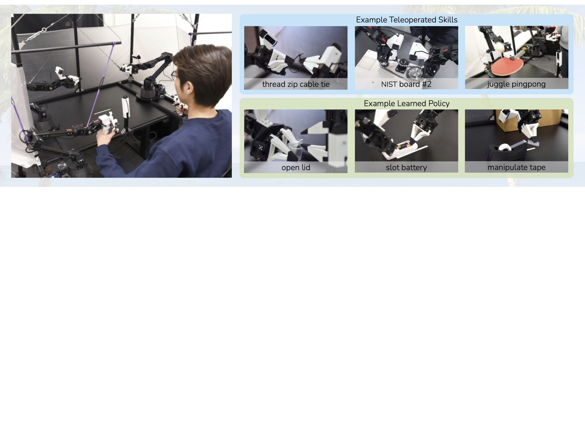
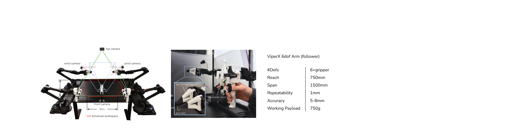
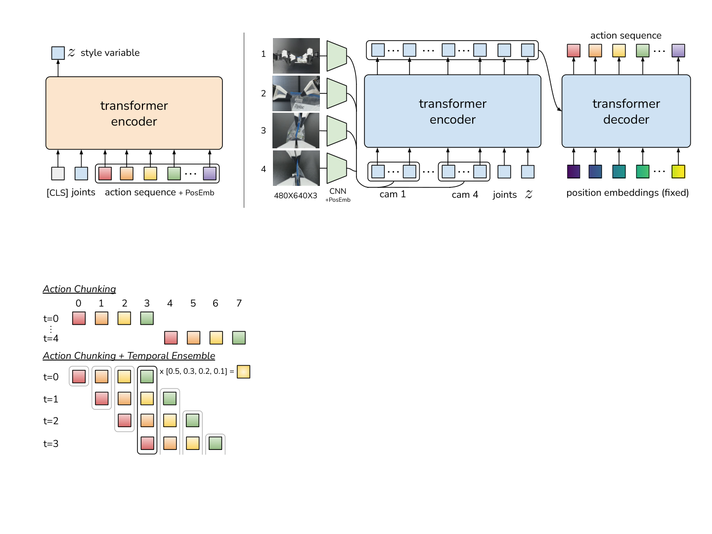
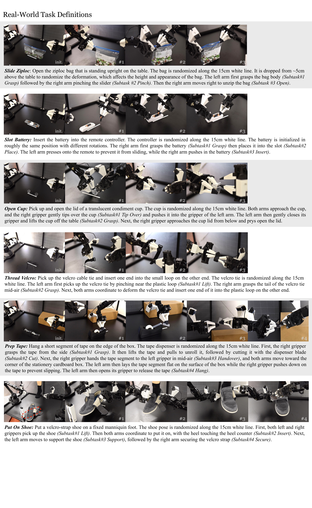
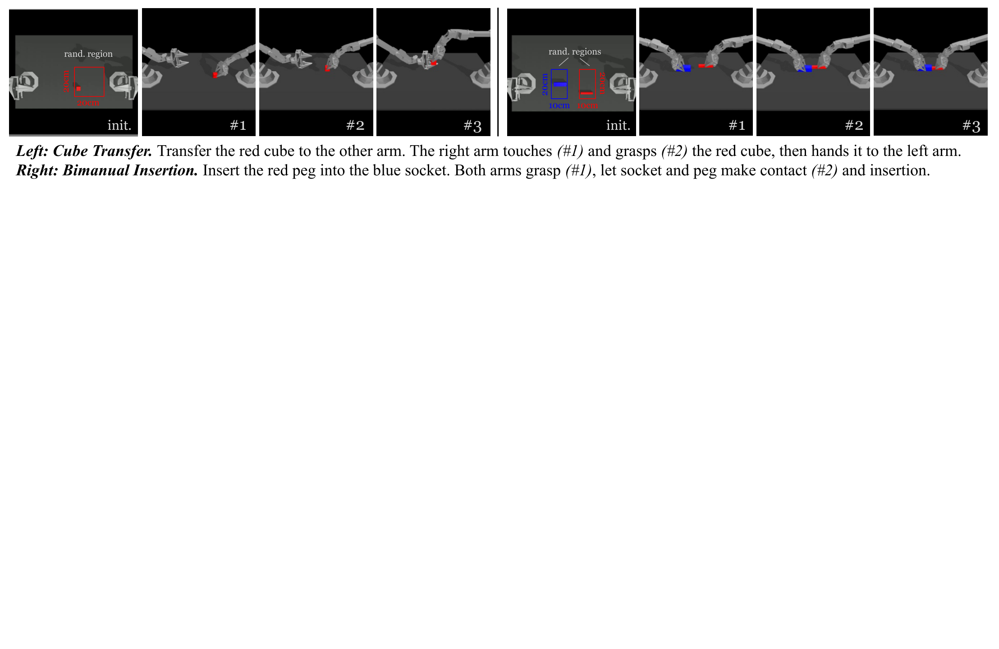
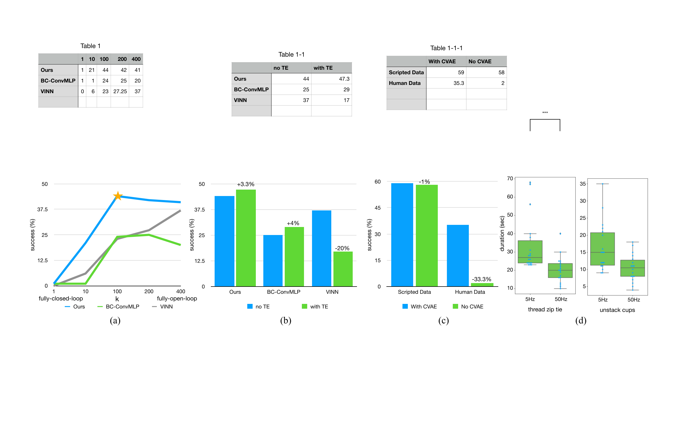

D2. Learning Fine-Grained Bimanual Manipulation with Low-Cost Hardware¶
0. 읽기 전 약어 및 핵심 용어¶
이 문서를 읽기 전에 아래 약어와 용어를 먼저 정리한다. 이후 본문에서는 괄호 안의 약어를 사용한다.
- Artificial Intelligence (AI): 사람의 지각, 추론, 학습, 의사결정 능력을 기계가 수행하도록 만드는 인공지능 분야를 뜻한다.
- Vision-Language-Action (VLA): 시각 관측과 언어 명령을 함께 받아 로봇 action까지 생성하는 모델 또는 학습 패러다임이다.
- Red-Green-Blue image (RGB): 색상을 red, green, blue 세 채널로 표현하는 일반 image format이다.
- Behavior Cloning (BC): expert demonstration의 observation-action pair를 supervised learning으로 모방하는 imitation learning 방법이다.
- Conditional Variational Autoencoder (CVAE): 조건 변수에 따라 latent variable을 샘플링하고 output을 재구성하는 generative model이다.
- Kullback-Leibler divergence (KL): 두 확률분포 사이의 차이를 측정하는 information-theoretic divergence이다.
- Mean Squared Error (MSE): 예측값과 정답의 차이를 제곱해 평균한 regression loss이다.
- Robotics Transformer (RT): robot observation을 입력받아 action을 예측하는 transformer 기반 robot policy 계열을 뜻한다.
- Robotics Transformer 1 (RT-1): Google의 실제 로봇 demonstration data로 학습한 transformer 기반 robot control policy이다.
- Robotics Transformer-X model family (RT-X): Open X-Embodiment 데이터 위에서 여러 robot embodiment로 확장한 RT 계열 policy family를 뜻한다.
- RT-X shorthand (RTX): Open X-Embodiment 맥락에서 RT-X 계열 robot policy를 줄여 부르는 표기다.
- A Low-cost Open-source Hardware System for Bimanual Teleoperation (ALOHA): 저비용 양팔 teleoperation hardware와 imitation learning setup을 뜻한다.
- Action Chunking with Transformers (ACT): 여러 timestep의 action chunk를 한 번에 예측해 fine-grained robot manipulation을 학습하는 transformer policy이다.
- Visual Imitation through Nearest Neighbors (VINN): 현재 관측과 유사한 demonstration을 찾아 action을 결정하는 nearest-neighbor imitation baseline이다.
- Physical Intelligence pi-zero model (pi0): Physical Intelligence가 제안한 general robot control용 vision-language-action flow model이다.
- Physical Intelligence pi-zero-point-five model (pi0.5): pi0를 open-world household manipulation으로 확장한 VLA model이다.
- United States Dollar (USD): 미국 달러 통화 단위이며, hardware cost나 budget을 표현할 때 쓰인다.
- Physical Artificial Intelligence (Physical AI): 디지털 공간의 예측을 넘어 물리 세계에서 지각, 예측, 계획, 행동, 안전 검사를 수행하는 AI 시스템을 뜻한다.
1. Metadata¶
| Field | 내용 |
|---|---|
| ID | D2 |
| Title | Learning Fine-Grained Bimanual Manipulation with Low-Cost Hardware |
| Authors | Tony Z. Zhao, Vikash Kumar, Sergey Levine, Chelsea Finn |
| Affiliation / Team | Stanford University / UC Berkeley / Meta |
| Venue / Status | RSS 2023 / arXiv |
| Date | 2023-04-23 |
| Link | https://arxiv.org/abs/2304.13705 |
| Local source | paper_corpus/sources/D2 |
| Source figures | paper_corpus/figures_source/D2/manifest.md |
2. 핵심 요약¶
이 논문은 ALOHA라는 저비용 bimanual teleoperation hardware와 ACT(Action Chunking with Transformers)라는 imitation learning algorithm을 함께 제안한다. 목표는 비싼 dexterous hand나 고정밀 sensor 없이도, condiment cup 열기나 battery slotting 같은 fine-grained bimanual manipulation을 real robot에서 학습하는 것이다.
ACT의 핵심은 single-step action을 예측하지 않고 future action sequence를 chunk로 예측하는 것이다. 여기에 overlapping chunk를 평균내는 temporal ensembling과 human demonstration variability를 다루는 CVAE objective를 결합한다.
3. 왜 중요한가?¶
- ALOHA는 이후 Mobile ALOHA, ACT, pi0/pi0.5의 dexterous manipulation 실험 흐름에 직접적인 기반이 된다.
- action chunking은 Diffusion Policy, pi0, pi0.5의 action chunk formulation으로 이어진다.
- low-cost hardware와 high-quality teleoperation data가 robot learning scaling에서 얼마나 중요한지 보여준다.
- 10분 또는 50개 demonstration만으로 여러 fine manipulation task를 80-90% success 수준까지 학습했다.
- VLA foundation model 이전 단계에서 "좋은 로봇 데이터는 어떻게 만들고, action을 어떻게 출력해야 하는가"를 매우 잘 보여준다.
4. ALOHA System¶
ALOHA는 두 개의 leader robot과 두 개의 follower robot을 사용한다. 사용자가 작은 WidowX leader arm을 직접 backdrive하면, 큰 ViperX follower arm이 joint-space mapping으로 이를 따라간다.

Figure 1. ALOHA system. 전체 시스템은 off-the-shelf robot과 3D printed component로 구성되며 20k USD 이하 비용을 목표로 한다. 왼쪽은 leader robot을 backdrive하는 teleoperation, 오른쪽은 precise/contact-rich/dynamic task 예시다. Source figure: figures/setup.jpg.
논문은 ALOHA를 설계할 때 low-cost, versatile, user-friendly, repairable, easy-to-build라는 5개 기준을 둔다. 특히 fine manipulation에서 task-space mapping보다 joint-space mapping을 선택한 이유가 중요하다.
| 설계 선택 | 이유 |
|---|---|
| joint-space mapping | singularity 근처에서도 inverse kinematics 실패를 피하고 latency를 줄임 |
| low-cost ViperX follower | 연구실이 재현 가능한 budget 확보 |
| smaller WidowX leader | kinesthetic teleoperation을 쉽게 구현 |
| 3D printed handle/scissor | backdriving과 gripper control을 쉽게 만듦 |
| four camera views | top/front/two wrist view로 visual feedback 확보 |
5. Hardware Detail¶

Figure 2. ALOHA detailed setup. front/top/two wrist camera와 bimanual workspace, handle and scissor mechanism, custom gripper, ViperX 6-DoF robot spec을 보여준다. Source figure: figures/setup_close.pdf.
teleoperation과 data recording은 50Hz로 동작한다. 논문은 user study에서 5Hz로 낮추면 completion time이 62% 증가한다고 보고하며, fine manipulation에서는 high-frequency teleoperation이 중요하다고 주장한다.
6. ACT Overview¶
ACT는 current observation을 보고 다음 \(k\) step의 action sequence를 예측한다.

Figure 3. ACT architecture. CVAE encoder는 action sequence와 joint observation을 style variable $z$로 압축하고, test time에는 버려진다. decoder/policy는 multi-view image, joint position, $z$를 받아 transformer로 future action sequence를 예측한다. Source figure: figures/algo.pdf.
ACT는 세 가지 아이디어의 결합이다.
| 구성 | 역할 |
|---|---|
| action chunking | single-step BC보다 effective horizon을 줄이고 temporally correlated confounder를 완화 |
| temporal ensembling | overlapping action chunk를 평균내어 motion을 smooth하게 만듦 |
| CVAE objective | human demonstration의 variability와 multimodality를 latent variable로 표현 |
7. Action Chunking¶
기존 behavioral cloning이 매 timestep마다 하나의 action만 예측한다면, ACT는 현재 observation에서 다음 \(k\)개의 action을 한 번에 예측한다.
| Notation | 의미 |
|---|---|
| \(\hat{\mathbf{a}}_{t:t+k}\) | policy가 예측한 future action chunk |
| \(\pi_{\theta}\) | ACT policy |
| \(\theta\) | policy parameter |
| \(\mathbf{o}_t\) | timestep \(t\)의 observation |
| \(k\) | chunk size |
action chunking은 compounding error를 줄이는 데 중요하다. 전체 task horizon이 \(T\)일 때, single-step policy는 \(T\)번의 decision point를 갖지만, \(k\) step chunk를 실행하면 effective horizon이 대략 \(T/k\)로 줄어든다.
| Notation | 의미 |
|---|---|
| \(H_{\mathrm{effective}}\) | action chunking 이후의 effective decision horizon |
| \(T\) | 전체 episode 길이 |
| \(k\) | 한 번에 예측/실행하는 action chunk 길이 |
단, \(k\)가 너무 크면 open-loop에 가까워져 observation 변화에 반응하지 못한다. 논문 ablation에서도 chunk size가 너무 커지면 성능이 떨어지는 구간이 나타난다.
8. Temporal Ensembling¶
naive action chunking은 \(k\) step마다 새 observation을 반영하므로 action이 갑자기 바뀌어 motion이 jerky해질 수 있다. ACT는 매 timestep policy를 query하고, 특정 timestep에 대해 여러 chunk가 예측한 action을 weighted average한다.
| Notation | 의미 |
|---|---|
| \(w_i\) | 현재 timestep action을 계산할 때 \(i\)번째 예측 chunk에 부여하는 weight |
| \(i\) | action prediction의 상대적 age/index |
| \(m\) | exponential weighting의 decay 정도를 조절하는 hyperparameter |
temporal ensemble은 overlap되는 여러 예측을 부드럽게 합쳐 precise manipulation에서 motion smoothness를 높인다. 논문은 BC-ConvMLP와 ACT 같은 parametric policy에서 temporal ensembling이 도움이 된다고 보고한다.
9. CVAE Objective¶
ACT는 human demonstration의 variability를 모델링하기 위해 CVAE로 학습된다. encoder는 observation과 action sequence를 latent style variable \(z\)로 압축하고, decoder는 observation과 \(z\)를 조건으로 action chunk를 생성한다.
학습 objective는 reconstruction loss와 KL regularization의 합이다.
| Notation | 의미 |
|---|---|
| \(\mathcal{L}_{\mathrm{reconst}}\) | predicted action chunk와 demonstration action chunk 사이의 reconstruction loss |
| \(\hat{\mathbf{a}}_{t:t+k}\) | ACT decoder가 예측한 action chunk |
| \(\mathbf{a}_{t:t+k}\) | demonstration에서 나온 ground-truth action chunk |
| \(\mathrm{MSE}\) | mean squared error |
| Notation | 의미 |
|---|---|
| \(\mathcal{L}_{\mathrm{reg}}\) | CVAE latent distribution을 standard Gaussian prior에 가깝게 만드는 KL regularization |
| \(D_{\mathrm{KL}}\) | Kullback-Leibler divergence |
| \(q_{\phi}\) | CVAE encoder distribution |
| \(\phi\) | encoder parameter |
| \(z\) | style latent variable |
| \(\bar{\mathbf{o}}_t\) | encoder에 사용되는 observation representation |
| \(\mathcal{N}(0,\mathbf{I})\) | standard Gaussian prior |
최종 loss는 다음과 같다.
| Notation | 의미 |
|---|---|
| \(\mathcal{L}\) | ACT training loss |
| \(\beta\) | KL regularization의 강도를 조절하는 weight |
논문은 scripted data처럼 deterministic한 demonstration에서는 CVAE 제거가 큰 차이를 만들지 않지만, human data에서는 CVAE objective가 중요하다고 보고한다. 이는 human demonstration이 noisy하고 multimodal하기 때문이다.
10. Training and Inference¶
training에서는 demonstration dataset \(\mathcal{D}\)에서 observation과 action chunk를 sample하고, CVAE encoder/decoder를 함께 학습한다.
| Notation | 의미 |
|---|---|
| \(\mathcal{D}\) | ALOHA teleoperation으로 수집한 demonstration dataset |
| \(\mathbf{o}_t\) | current observation |
| \(\mathbf{a}_{t:t+k}\) | current timestep 이후 \(k\) step action sequence |
inference에서는 encoder를 버리고, \(z\)를 prior mean인 0으로 설정한다.
| Notation | 의미 |
|---|---|
| \(z\) | style variable |
| \(\mathbf{0}\) | prior mean; test time에서 deterministic policy처럼 사용 |
논문 구현에서 ACT는 약 80M parameter이고, task별로 scratch training한다. RTX 2080 Ti 하나에서 약 5시간 학습, inference는 약 0.01초로 보고된다.
11. Real-World Tasks¶

Figure 4. Real-world task definitions. ALOHA/ACT는 condiment cup open, slide ziploc, slot battery, thread velcro, prep tape, put on shoe 등 6개 real-world fine manipulation task를 평가한다. Source figure: figures/real_tasks.pdf.
이 task들은 단순 pick-and-place가 아니다. 얇은 film을 잡아당기거나, 작은 battery를 slot에 넣거나, deformable한 물체를 다루는 등 contact-rich, high-precision, bimanual coordination을 요구한다.
12. Simulation Tasks and Data¶

Figure 5. Simulated task definitions. sim transfer cube와 sim insertion task는 scripted data와 human data 조건에서 ACT와 baseline을 비교하는 데 사용된다. Source figure: figures/sim_tasks.pdf.

Figure 6. Data collection and evaluation examples. fine manipulation task는 visual observation과 bimanual coordination이 강하게 결합되어 있어 data quality와 action representation이 모두 중요하다. Source figure: figures/fm_data.pdf.
13. Experimental Results¶
논문은 ACT를 BC-ConvMLP, BeT, VINN, RT-1 등과 비교한다.
| 결과 포인트 | 내용 |
|---|---|
| simulated tasks | scripted/human data 모두에서 ACT가 baseline보다 높은 success |
| Slide Ziploc | ACT가 88% final success |
| Slot Battery | ACT가 96% final success |
| Cup Open | ACT가 84% success |
| Put On Shoe | ACT가 92% success |
| Thread Velcro | ACT도 어려워 final 20% success |
저자들은 baseline들이 초반 stage 이후 거의 진전하지 못하는 반면, ACT는 action chunking과 temporal ensembling 덕분에 fine manipulation sequence를 더 안정적으로 이어간다고 해석한다.
14. Ablation 핵심¶
논문 ablation의 핵심 메시지는 명확하다.
| Ablation | 해석 |
|---|---|
| chunk size \(k\) 변화 | \(k=1\)보다 action chunking이 좋지만, 너무 큰 \(k\)는 open-loop 성격이 강해져 성능 저하 |
| temporal ensemble 제거 | ACT와 BC-ConvMLP는 smoothness 이득을 잃음 |
| CVAE 제거 | scripted data에서는 영향이 작지만 human data에서는 성능 저하 |
| 5Hz teleoperation | 50Hz보다 completion time이 62% 느려짐 |
이 결과는 fine manipulation에서 data collection frequency, action horizon, human demonstration variability가 모두 중요한 설계 축이라는 점을 보여준다.
15. Physical AI / World Model 관점¶
ACT는 world model을 학습하지 않는다. 오히려 complex contact dynamics를 명시적으로 모델링하기 어렵기 때문에 pixel-to-action closed-loop policy를 학습한다는 입장에 가깝다.
| 관점 | ACT의 선택 |
|---|---|
| dynamics modeling | 명시적 contact/deformation model 대신 demonstration policy 학습 |
| observation | RGB multi-view camera와 joint position |
| action | continuous target joint position sequence |
| temporal structure | action chunking과 temporal ensemble |
| uncertainty/multimodality | CVAE latent variable |
world model 스터디에서는 이 논문을 "복잡한 물리 세계를 예측하지 않고도, 좋은 teleoperation data와 action sequence policy로 어디까지 갈 수 있는가"라는 반대축 사례로 읽으면 좋다.
16. 후속 연구와의 연결¶
| 연결 논문 | 연결 포인트 |
|---|---|
Diffusion Policy (P1) |
action sequence generation과 receding horizon control로 이어짐 |
pi0 (P4) |
action chunk \(H=50\)과 dexterous manipulation data의 기반 |
pi0.5 (P5) |
mobile manipulator와 dexterous long-horizon household task의 기반 |
| Mobile ALOHA | ALOHA hardware를 mobile platform으로 확장 |
Open X-Embodiment (D1) |
ALOHA-style data가 cross-embodiment dataset의 중요한 구성 요소가 됨 |
17. 한계와 주의점¶
- task별 scratch training이 필요하므로 foundation model은 아니다.
- low-cost hardware지만 여전히 bimanual setup과 teleoperation skill이 필요하다.
- buttoning a dress shirt, flat ziploc opening, candy unwrapping처럼 더 어려운 deformable/contact task에는 실패 사례가 있다.
- CVAE는 variability를 다루지만, explicit uncertainty-aware planning이나 recovery policy는 아니다.
- generalization 범위는 foundation VLA보다 좁고, task-specific imitation learning에 가깝다.
18. 발표 구성 제안¶
- fine manipulation이 왜 어려운지 condiment cup/battery 예시로 시작한다.
- ALOHA hardware가 어떻게 저비용으로 high-quality demonstration을 수집하는지 설명한다.
- ACT architecture figure로 CVAE encoder/decoder와 action chunking을 설명한다.
- action chunking, temporal ensembling, CVAE loss를 수식으로 정리한다.
- real-world task와 result를 보여주며 baseline과 비교한다.
- ablation을 통해 "chunking, temporal ensemble, CVAE가 각각 왜 필요한지"를 설명한다.
- pi0/pi0.5와 연결해, robot foundation model의 action head가 왜 chunked continuous action을 선호하게 되었는지 정리한다.
19. 토론 질문¶
- fine manipulation에서 action chunking은 왜 single-step BC보다 강한가?
- chunk size \(k\)는 task horizon, feedback frequency, inference latency와 어떤 trade-off를 만들까?
- CVAE와 diffusion/flow action model은 human demonstration multimodality를 다루는 방식에서 어떻게 다른가?
- low-cost hardware가 robot learning 연구의 scaling bottleneck을 얼마나 줄일 수 있을까?
- 운영/현장 적용 관점에서 teleoperation workflow, operator fatigue, data quality control을 어떻게 최적화할 수 있을까?
20. 한 문장 정리¶
ALOHA/ACT는 저비용 bimanual teleoperation과 action chunking 기반 transformer imitation learning을 결합해, 후속 dexterous robot foundation model의 데이터 수집과 action representation에 큰 영향을 준 논문이다.